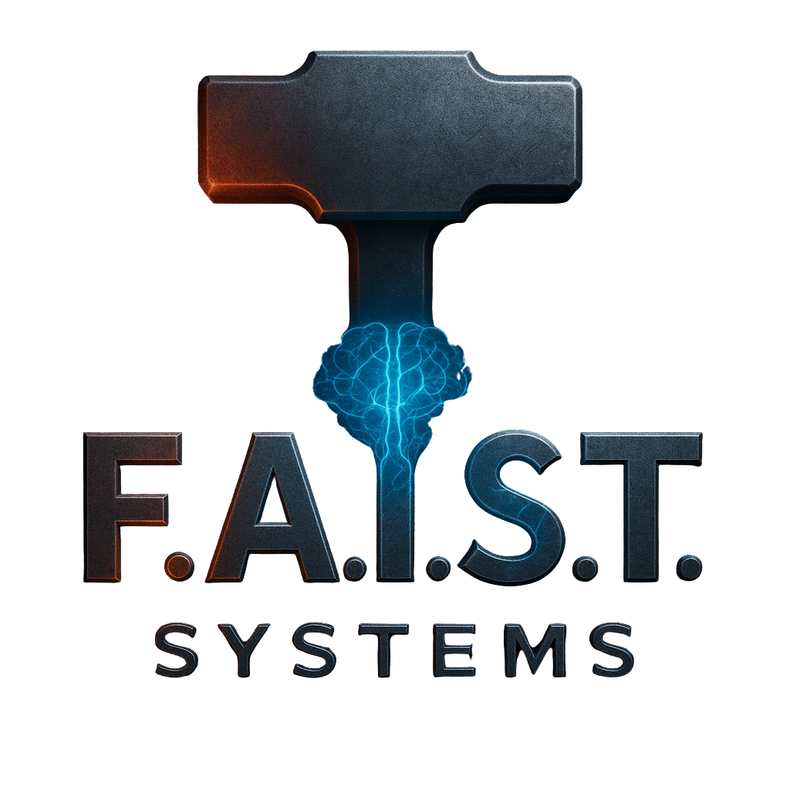

Science · Fire · Intelligence · Systems
F.A.I.S.T. Systems
The Forge of Future Intelligence
Forge of Artificial Intelligence, Science & Technology — věda + oheň + systémy. Tady kováme užitečné AI nástroje.
Work-in-progress
Probíhá první výheň: voice assistant, on-prem LLM, datové trubky, smart-home integrace.
GitHub →